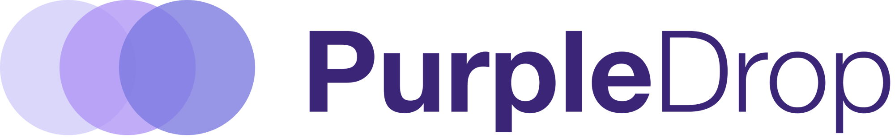
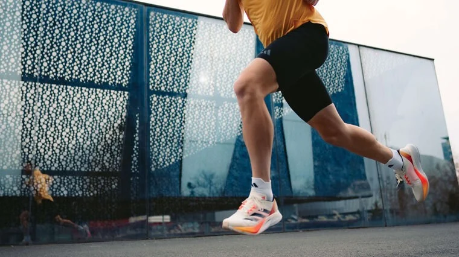
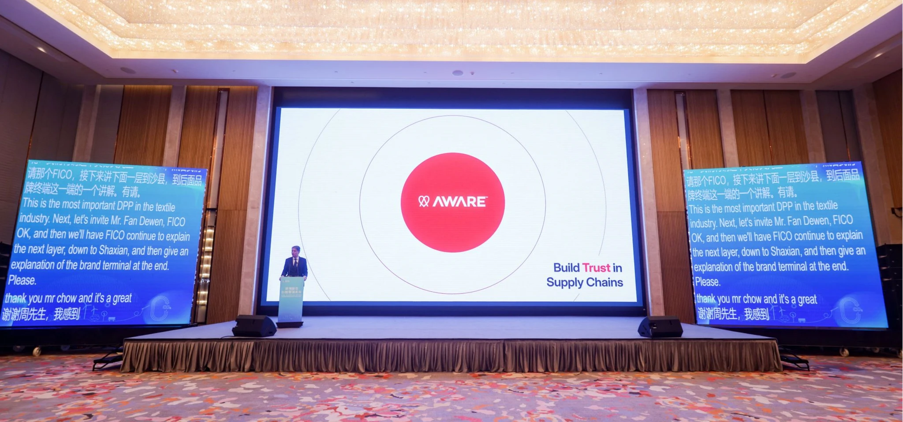
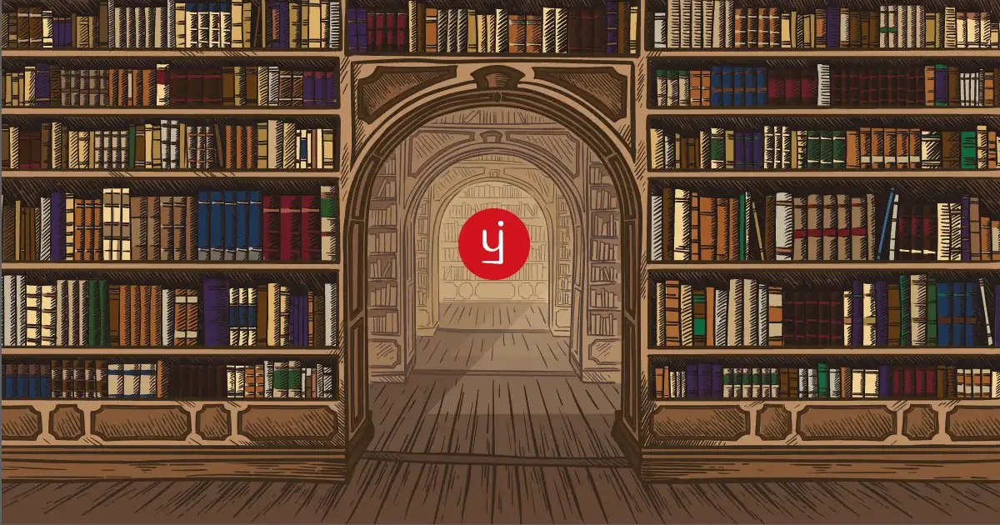

Strategic Product & Brand Design
We design products and brands for ambitious founders and business leaders. People out to make a change.
Clients include AI Native companies in Law, HR, Accounting, and more.




